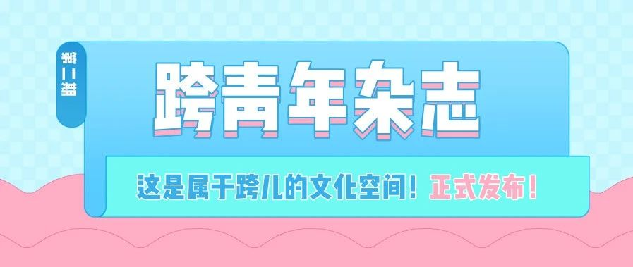
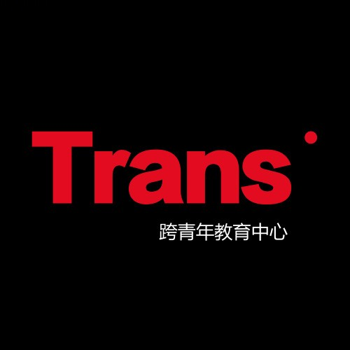

[转][跨青年]《跨青年》第二期正式发布！
以下文章来源于跨青年 ，作者TSECC

跨青年
.
跨青年成立于2017年，主要工作为跨性别教育与跨性别青年的经济性赋权
这次我们将2019年6月19日-2019年11月19日期间，发布的14篇文章整理成册，以杂志的形式再次呈现给大家。
长久以来一直没有多少属于跨儿们的文化空间，在许多有关LGBT的事情中经常被遗忘，真正能理解跨儿们的 少之又少。所以我们想通过线上杂志这样一个空间，可以让跨儿们写下自己的故事、抒发自己的情感、发表自己的文章，创造跨儿社群的文化。
——我们为何要办杂志


电子杂志微云下载码
（点击阅读原文Google下载）
感谢文章作者Tracy、J、猪川猫二饼、丸子、夜子、Linus、小白、辰轩、杨雨欣、继轲。感谢被采访者Ramona、Perry。感谢文章编辑Tracy，感谢电子杂志的视觉设计师花子乐。感谢同志之声美工组对本期杂志的设计支持。感谢所有支持我们的伙伴。
▾
策划 ✎ 跨青年教育中心
图片 ✎ 来源于网络侵权删
未 经 允 许 请 勿 转 载 到 其 他 公 众 号
请 给 该 公 众 号 留 言 获 取 内 容 授 权
About TSECC
TSECC｜关注跨性别教育与跨性别青年的经济性赋权
Contact us
kqnjyzx@gmail.com
合作/投稿请发送邮件